AutoData · 全流程可视化讲解
从少量人工遥操演示，到可直接用于策略训练的大规模成功演示数据集 —— 端到端一张图讲清「录制 → 标注 → 生成 → 验证」每一步在做什么。
内容统一整理自 AutoData 仓库文档（docs/）与两份既有笔记 （AutoData-原理与数据流总览.md、AutoData-数据生成随机化可视化.html）。 文中数值为便于说明的示意值；字段、参数、流程顺序以仓库代码与官方文档为准。
①一页看懂：端到端全流程
AutoData 接收一小批已标注的人工演示，用并行仿真环境把它们拆段、变换、拼接、执行、录制， 批量产出新的成功演示。整条流水线只有四个用户可见步骤：
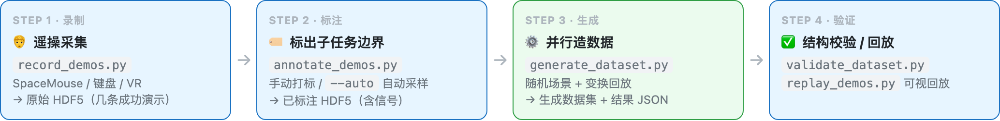
STEP 3 内部才是 AutoData 的核心：一次「生成尝试（attempt）」内部有六个阶段， 其中只有三处是真正的随机化（🎲）——其余在采样结果确定后都是确定性的。
一句话记忆： 场景多样性来自 Reset（环境层） ，轨迹多样性来自 生成层 —— 边界抖动 改变“时间段”， 源段选择 改变“用哪段”， 动作噪声 改变“怎么执行”。 三者叠加，少量演示就能长出大量彼此不同的演示。
四个步骤的输入 / 输出对照
步骤 | 命令 / 脚本 | 输入 | 输出 |
|---|
1 录制 | IsaacLab
record_demos.py | 已注册的 Isaac Lab 环境 --task；遥操设备 | 原始演示 HDF5：每 episode 的 actions / initial_state / obs |
2 标注 | scripts/
annotate_demos.py | 原始 HDF5 + 任务描述 YAML + 机械臂配置 YAML | 已标注 HDF5：在 obs/datagen_info 下写入子任务 term/start 信号与逐帧位姿记录 |
3 生成 | scripts/
generate_dataset.py | 已标注 HDF5 + 任务描述 + 机械臂配置（可选 env profile） | 生成数据集 HDF5（成功 episode）＋ 可选 --result_file 统计 JSON |
4 验证 | scripts/validate_dataset.py
IsaacLab replay_demos.py | 生成数据集 HDF5 | 结构校验报告 / 可视化回放 |
可跳过第 1–2 步：仓库自带预标注数据集
仓库随附预标注源数据集，可直接跳到生成步骤： datasets/annotated_datasets/dataset_franka_annotated.hdf5（Franka 堆叠）、 dataset_gr1_annotated.hdf5 / dataset_g1_annotated.hdf5（人形）、 dataset_franka_skillgen_annotated.hdf5（SkillGen）。 这些文件通过 Git LFS 分发，需先执行 git lfs pull。
②为什么可行：把演示拆成“相对物体”的技能段
模仿学习策略是“数据饥饿”的：需要大量、多样的成功演示，而人工遥操采集又慢又贵。 但策略真正要学的东西，往往在十条演示里就已经齐了——同一个技能，在不同物体摆放下的重复。 AutoData 正是利用这份冗余。
两个关键定义
概念 | 含义 |
|---|
子任务
subtask | 一段连续动作，其中末端执行器（EEF）的运动由单一参考物体支配，例如“伸手抓方块”“把方块放到另一个方块上”。 当支配运动的物体改变时，一个子任务结束、下一个开始。 |
物体相对存储 | 因为每段技能是相对参考物体记录的，所以它可以被刚体变换到新的场景位姿后原样回放—— 把变换后的各段拼接起来，少量演示就能变成任意规模的数据集。 |
变换公式：为什么必须用“绝对位姿”做中间表示
源演示里每步的 action 是 相对当时状态的增量 （delta = target − current）， 只在录制时的那个当前位置下成立， 不能被直接变换 。所以 AutoData 在 绝对位姿 空间里做刚体变换：
# 把源 eef 位姿从“源物体系”搬到“当前物体系”
T_new_eef = T_current_object · inv(T_source_object) · T_source_eef
执行时再用新场景的真实状态重新计算 delta，action 才正确。文档把它写成硬约束： “The transformation requires task-space actions … which is what the embodiment adapters guarantee.”
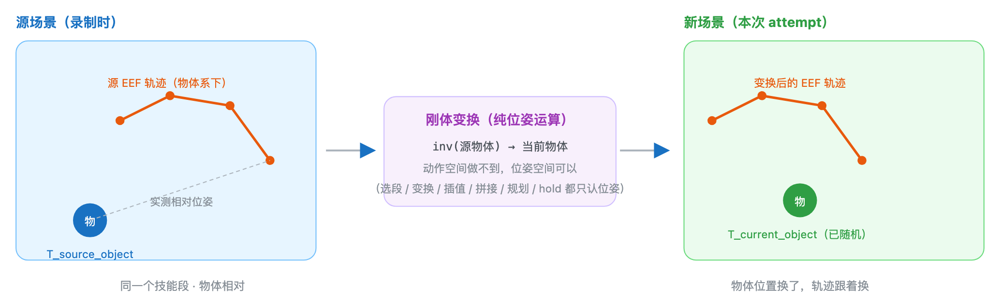
诊断要点： 变换后如果所有抓取都 整体偏移一个固定距离 ，几乎总是机械臂配置里的 eef_offset 与环境报告/源数据标注所用坐标系不一致（见 ⑬ 参数速查）。
③架构与四大构件：生成机不直接认识仿真器
AutoData 组织架构只围绕一个理念：生成机制不应该直接认识仿真器或机器人。 生成器需要的一切，都通过小的、显式的接口拿到——任务描述 YAML、机械臂配置 YAML、以及一个只读接口 Datastream。于是新任务、新机器人、新算法都能彼此独立地接入。
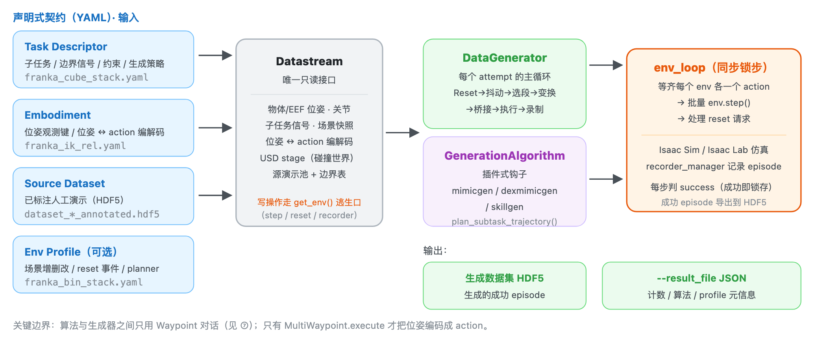
包职责
包 / 目录 | 职责 |
|---|
autodata_interfaces | 与仿真器/配置的边界：任务描述、机械臂适配器、Datastream、env 配置辅助、运动规划后端。 |
autodata_core | 生成机制本体：数据生成器、生成算法、源演示池、选择策略、Waypoint 执行。 |
autodata_utils | 小工具（位姿数学、张量辅助）。 |
autodata_examples | 示例任务描述、机械臂配置、环境 profile。 |
scripts | 面向用户的入口：生成 generate_dataset.py、标注 annotate_demos.py、校验 validate_dataset.py。 |
Datastream：唯一的只读窗口
Datastream 把「实时环境 + 任务描述 + 机械臂适配器 + 源演示池」组合到同一个对象后面， 作为生成器观察世界的唯一入口。它刻意不做写操作——不 step、不 reset、不录制； 这些控制侧操作统一通过 get_env() 逃生口访问，从而保证读接口诚实、变更点集中可审计。
查询组 | 代表方法 |
|---|
任务语义 | get_subtasks / get_task_constraints / get_generation_policy / get_object_refs / get_term_signal_names / get_start_signal_names / get_eef_names / get_expected_attached_object |
机械臂 | get_robot_eef_pose / get_robot_joint_positions / target_eef_pose_to_action / action_to_target_eef_pose / actions_to_passthrough_actions |
实时场景 | get_object_poses / get_robot_root_pose / get_scene_state / get_subtask_term_signals / device |
碰撞世界来源 | get_usd_stage / get_env_prim_path / get_robot_prim_path |
源演示池 | source_pool / datagen_infos / subtask_boundaries / num_source_demos / add_episode |
坐标与约定（一有“位姿看着不对”先查这里）
- 位姿是 4×4 齐次矩阵 （torch.Tensor），位于环境计算设备。
- 物体与机器人根位姿是 env 相对 ：减去每个环境自身的原点，因而可跨并行环境比较，也与数据集记录一致。
- 四元数统一为 (x, y, z, w) ，单位元为 [0,0,0,1]。顺序写错会整体翻转 180°。
- 读接口是批量的 ：方法接收 env_ids，返回形状 (len(env_ids), ...)；传 None 读全部。
四大构件如何共同描述一个任务
Task Descriptor（YAML）
「任务是什么」的唯一事实来源：按 eef_name 分组的子任务序列、每个子任务的边界信号、 参考物体、选择策略与生成旋钮；多臂任务的跨臂约束；以及全局 generation_policy。 标注工具和生成器读同一份文件，因此标注与生成对“子任务是什么”不可能产生分歧。
Embodiment（YAML + adapter）
从生成器视角描述机器人：去哪读末端位姿、如何在“目标位姿 ↔ action 向量”之间转换。 生成器本身从不接触关节名、控制器或运动学，只会“给我 EEF 位姿”和“把这个目标位姿变成 action”。
④STEP 1 · 录制：采一小批人工演示
AutoData 消费的源演示是 Isaac Lab HDF5 数据集的格式（每个 episode 含 actions、initial_state、observations）。 这一步只需采集少量（示例为 10 条）成功演示。
# Franka 堆叠任务：用 SpaceMouse 采集 10 条成功演示
python submodules/IsaacLab-Arena/submodules/IsaacLab/scripts/tools/record_demos.py \
--viz kit \
--task Isaac-Stack-Cube-Franka-IK-Rel-v0 \
--teleop_device spacemouse \
--dataset_file ./datasets/dataset_franka.hdf5 \
--num_demos 10
Franka 任务与操作
环境 Isaac-Stack-Cube-Franka-IK-Rel-v0：Franka 机械臂在桌面上叠三个方块—— 红叠蓝，再绿叠红。一条演示在满足成功条件（按正确顺序叠好）时自动判定为成功并收尾； 中途出错按右键丢弃并重来。
设备 | 输入 → 动作 |
|---|
SpaceMouse | 倾斜 → 沿 x / y 移动 |
推 / 拉 → 沿 z 移动 | |
扭转 → 旋转 | |
左键 → 切换夹爪开 / 合 | |
右键 → 丢弃当前演示并复位 | |
键盘 | W/S A/D Q/E → 沿 x / y / z 移动 |
Z/X T/G C/V → 绕 x / y / z 旋转；K 切夹爪 | |
R → 丢弃并复位 | |
让演示“既好生成、又好训练”的三条建议：
- 尽量短 ——下游策略决策更少，生成器要变换的段也更短。
- 走直线 ——朝目标直接移动，而不是逐轴移动。
- 不要长时间停顿 ——平滑连续的运动比莫名的停顿更易学习。
采集完成后可用 python scripts/validate_dataset.py datasets/dataset_franka.hdf5 先做一次结构检查。 若采集人形演示（GR-1 / G1），需 Apple Vision Pro + CloudXR；没有 VR 设备可直接使用仓库预标注数据集跳到生成。
⑤STEP 2 · 标注：给演示打上子任务边界信号
生成前，每条源演示都必须标注子任务终止信号：即一个子任务结束、下一个开始的 action 下标。 子任务及其信号名由任务描述 YAML 声明。标注工具会回放每条 episode，并把结果写到输出 HDF5 的 obs/datagen_info 下。
两种标注模式
手动标注（Manual）
在 Kit 窗口中回放每条 episode，用键盘标出边界。
N 播放 / B 暂停 / S 打标 / Q 跳过。
SkillGen 数据集只能手动标注， 因为需要同时打“起点”和“终点”标记。
自动标注（--auto）
回放时采样环境发布的布尔子任务观测项；每个信号的第一个上升沿即为边界。可无头运行（--viz none）。
需要环境本身发布了 per-subtask 布尔观测。Franka 堆叠任务支持，因此推荐自动标注。
标注在做什么：把连续轨迹切成段
标注只标记时间点；代码不会“观察轨迹后自己判断这段是抓取”。以“抓取 / 抬高 / 放置”的 12 步小例说明：
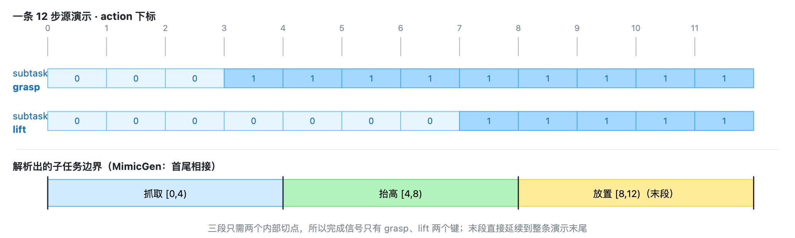
标注命令
# 自动标注（Franka 堆叠推荐）
python scripts/annotate_demos.py \
--env_name Isaac-Stack-Cube-Franka-IK-Rel-v0 \
--viz none \
--task_descriptor autodata_examples/tasks/franka_cube_stack.yaml \
--embodiment autodata_examples/embodiments/franka_ik_rel.yaml \
--input_file ./datasets/dataset_franka.hdf5 \
--output_file ./datasets/dataset_franka_annotated.hdf5 \
--auto
--auto 模式下，回放每一步都按任务描述里 subtask_term_signal 指定的名字采样观测项， 信号的第一个上升沿成为子任务边界。若信号从未触发、触发顺序不符、或违反描述的 subtask_term_offset_range 间距要求，该 episode 会被跳过并打印原因。
SkillGen 的标注不同：每个子任务还要有“起点”
SkillGen 用运动规划补齐段间过渡，规划器必须知道每个技能段从哪里开始。因此 SkillGen 数据集的标记是 起点、终点交替，以最终子任务的起点收尾。四段堆叠任务共需 7 个标记：
序 | 标记 | 含义 |
|---|
1 | grasp_1 起点 | 夹爪开始朝红块的最终接近 |
2 | grasp_1 终点 | 红块被稳稳抓牢 |
3 | stack_1 起点 | 开始往蓝块上放置 |
4 | stack_1 终点 | 红块落在蓝块上、夹爪松开 |
5 | grasp_2 起点 | 开始朝绿块最终接近 |
6 | grasp_2 终点 | 绿块被稳稳抓牢 |
7 | stack_2 起点 | 开始往红块上放置（末段，随轨迹结束） |
SkillGen 数据集用 franka_ik_rel_skillgen.yaml（与 MimicGen 版只差 eef_offset， 因为其源数据在 panda_hand 帧标注）。自动标注只产出终止信号，因此不能用于 SkillGen。
标注产物：obs/datagen_info 的字段
字段 | 形状（每条演示） | 含义 |
|---|
eef_pose | {eef_name: [T,4,4]} | 逐步记录的末端执行器位姿（实际观测）。 |
target_eef_pose | {eef_name: [T,4,4]} | 从记录 action 反解出的控制器目标位姿；变换用的是它。 |
object_poses | {object_name: [T,4,4]} | 记录到的物体位姿；子任务段据此表示成“相对参考物体”。 |
subtask_term_signals | {subtask_name: [T]} | 逐步布尔完成标志，由标注写入。 |
subtask_start_signals | {subtask_name: [T]} | 逐步布尔起点标志；仅 SkillGen 数据集存在。 |
passthrough_action | {channel: [T,D]} | 非位姿 action 通道（夹爪、手关节、底盘等），回放时逐字复制。 |
两条应答要点：
- eef_pose 与 target_eef_pose 分开：前者是“现在在哪”，后者是“这步想去哪”；变换用目标，实际位姿用于选择/锚定插值。
- 读到池里后 HDF5 键 object_pose（单数）对应属性 object_poses（复数）。
⑥STEP 3 · 生成：一次 attempt 的完整生命周期
有了已标注的源演示，MimicGen / DexMimicGen / SkillGen 就能合成新演示。每次尝试中，场景被随机化、 每个子任务选一段源演示、其末端轨迹被刚体变换到新物体位姿后回放。DataGenerator.generate() 就是一次「生成尝试」的完整生命周期。
6.1 最小命令与关键参数
# 小规模：Kit 窗口里先跑通
python scripts/generate_dataset.py \
--env_name Isaac-Stack-Cube-Franka-IK-Rel-v0 \
--viz kit --num_envs 20 --alg mimicgen \
--generation_num_trials 10 \
--task_descriptor autodata_examples/tasks/franka_cube_stack.yaml \
--embodiment autodata_examples/embodiments/franka_ik_rel.yaml \
--input_file ./datasets/annotated_datasets/dataset_franka_annotated.hdf5 \
--output_file ./datasets/generated_dataset_mimicgen_franka_small.hdf5
参数 | 说明 |
|---|
--alg | 生成算法：mimicgen / dexmimicgen / skillgen。 |
--env_name | 环境 id；省略时从源数据集元数据读取。 |
--task_descriptor | 任务描述 YAML（子任务 / 约束 / 生成策略）。 |
--embodiment | 机械臂配置 YAML（位姿 ↔ action 变换）。 |
--env_profile | 可选环境 profile：在创建环境前叠加场景增删改 / reset 随机化 / planner。 |
--input_file | 已标注源数据集 HDF5。 |
--output_file | 生成 episode 的目标 HDF5（默认 ./datasets/output_dataset.hdf5）。 |
--result_file | 可选 JSON：整次运行的统计与元信息（原子写）。 |
--generation_num_trials | 覆盖任务描述里的 generation_policy.num_trials。 |
--num_envs | 并行环境数，各自独立生成。数据规模靠它放大。 |
--viz | kit 开窗 / none 无头。数据集级生成一定用 none（渲染显著拖慢）。 |
--pause_subtask | 每个子任务后暂停，便于交互调试。 |
--visualize_plan | 把 SkillGen 规划轨迹流到 Rerun 查看器（仅 env 0）。 |
规模与预期（官方示例基准，RTX PRO 6000 Blackwell）： MimicGen 全量命令 --num_envs 500 --generation_num_trials 1000，成功率约 ~40% 、耗时约 15 分钟 ； DexMimicGen 人形约 ~70% / ~40 分钟 。失败尝试是正常的，不会被导出。
6.2 主循环：六步顺序
下面是 generate() 一次调用的执行顺序（autodata_core/data_generator.py）。 左侧是阶段，右侧是它真正做的事与关键函数。
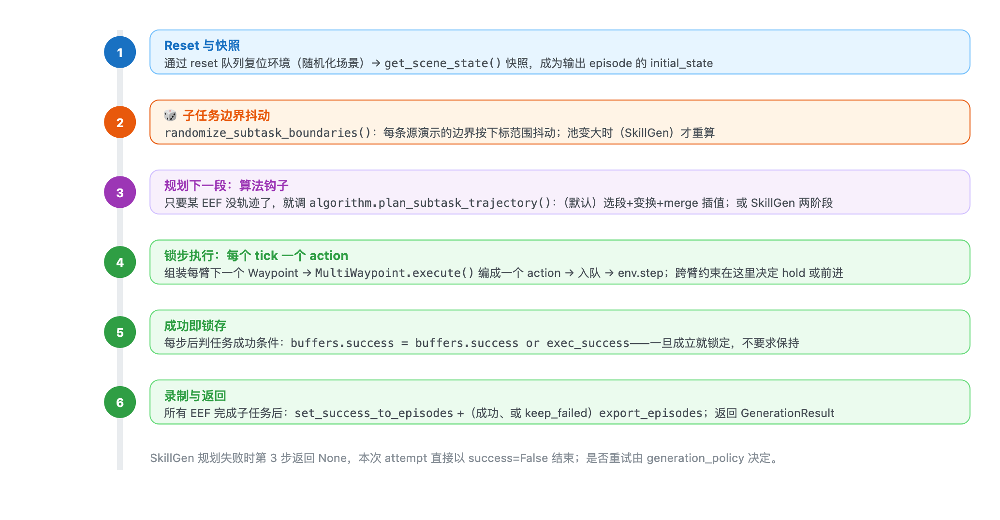
6.3 阶段细节与容易忽略的点
阶段 2 · 边界随机化
对每条源演示的边界做抖动，使不同生成演示不会在完全相同的步数切换子任务。非 SkillGen 时， 后一段起点直接取前一段随机化后的终点（首尾相接）；SkillGen 因读“起点信号”，起点也随机。 末尾会做断言保证：每段非空、段间递增、扁平化后单调不减。
# 示意：End 偏移范围 [10,20]，末段强制 [0,0]
子任务 原始 [start,end) 本次 [start,end) 片段长度
0 抓红块 [0,40) [0,55) 55
1 红叠蓝 [40,90) [55,102) 47
2 抓绿块 [90,140) [102,154) 52
3 绿叠红 [140,200) [154,200) 46 # 末段终点固定为 T
阶段 3a · 选源演示段（select）
把每条源演示在该子任务窗口内的片段切出来，交给选择策略。策略： random（均匀随机）、nearest_neighbor_object（按源物体位姿与当前物体位姿的位姿距离排序，前 nn_k 内随机取一）、 nearest_neighbor_robot_distance（把源 EEF 位姿先变到“源物体系”再映射到“当前物体系”，与当前 EEF 比距离）。 约束：object_ref 为空时只允许 random。 距离只用于相对排序（不做阈值判断），且只比源片段的第 0 帧；在算哪两者的距离、为什么这么算，见 9.3。
实现注意： 官方示例同时设了 select_src_per_subtask: true 与 select_src_per_arm: false。 在当前代码里，第一次选择后该臂的已选索引不再是 None，后续子任务的 need_selection 会被压成 false， 因而 整次尝试只选一次 。不要只按参数名字面理解为“逐段重选”。
阶段 3b · 变换（transform）
核心公式：T_new_eef(t) = T_current_object · inv(T_source_object_at_segment_start) · T_source_eef(t)。 另有两条分支：协调约束（use_delta_transform / coord_transform_scheme）直接套用 delta； 无参考物体时原样使用。首段（或 transform_first_robot_pose）会把记录的 EEF 实际位姿拼在目标序列最前，让插值从机器人真实位姿出发。 passthrough 通道只保留「本 EEF 自己的 + 非 EEF 的（如 body）」，避免串入另一条臂的夹爪动作。 最后包成 WaypointTrajectory 返回。
阶段 3c · 合并桥接段（merge）
基类默认路径即“生成段 + 合并插值”。merge() 先插值到目标段首位姿，再可选固定 hold num_fixed_steps 步，然后接上目标段；末了 pop_first() 丢掉仅用于锚定插值的种子 waypoint。 非首段默认从上一段最后目标位姿接入（interpolate_from_last_target_pose: true）； SkillGen 用 force_use_prev_traj=True，让真实技能段从「MP 终点位姿」而非实时机器人位姿开始插值。
阶段 4 · 跨臂约束与执行
每个 tick 前逐个 EEF 决定“往前走”还是“原地 hold”，这两个跨臂约束定义在 autodata_interfaces/tasks/subtask_constraint_spec.py：
约束 | 行为 |
|---|
sequential | 后者执行到只剩 sequential_min_time_diff 步时停下等前者； -1 表示前者完成前完全不启动前者。DexMimicGen |
coordination | 两臂共享同一条源演示与共享位姿变换；coordination_synchronize_start 让并发臂同步起步， synchronous_steps 让两边在尾段窗口内锁步。额外的前缀可先行执行。 |
MP transit 期间直接跳过约束（transit 不受约束）。SkillGen 因用 pending_subtask_trajectory + is_in_motion_plan 传递状态，生成器完全不需要知道 cuRobo 的存在。
阶段 6 · 停止条件与统计
env_loop 每次统计变化时读取 stats：若 guarantee_success=true，攒够 num_trials 个成功即停； 否则跑够 num_trials 次尝试即停。最终可选写入 JSON sidecar（临时文件 + fsync + 原子替换）。
{
"algorithm": "skillgen",
"requested_trials": 1000,
"num_success": 1000,
"num_failures": 412,
"num_attempts": 1412,
"env_profile": { // 仅当应用了环境 profile 时出现
"name": "franka_bin_stack",
"path": "autodata_examples/env_profiles/franka_bin_stack.yaml",
"planner": "franka_stack_cube_bin"
}
}
生成结果 JSON 是唯一记录“应用了哪个 profile”的地方——生成数据集本身只保存基础 env id。
⑦Waypoint 层：算法与生成器之间的“指令 IR”
“Algorithms and the generator talk to each other in waypoints, not actions.” 算法插件不直接产出 action，而是产出「目标位姿 + 透传动作 + 噪声」；只有到执行那一刻 （MultiWaypoint.execute），才编码成仿真器能用的 action。
为什么需要这一层
源演示录下来的 action 是相对录制那一刻状态的增量（delta_pos = target_pos − curr_pos）， 只在原来的当前位置下成立，无法被整体搬移。算法要做的运算几乎全在位姿上：
运算 | 作用对象 | 能在 action 空间做吗 |
|---|
选源（比距离）selection_strategy | EEF / 物体位姿距离 | ✗ |
变换到新物体位姿 transforms.py | 位姿矩阵乘 | ✗ |
段间插值 interpolate_poses | 两个位姿之间 | ✗ |
拼接 merge | 两段位姿轨迹首尾相接 | ✗ |
运动规划（cuRobo） | 输出位姿序列 | ✗ |
跨臂约束“原地 hold” | 冻结某个位姿 | ✗ |
加噪做多样性 | 位姿动作（编码时） | ✓ 只此一项 |
七项里六项只认位姿，因此统一用位姿作为工作表示，即 Waypoint。
四个数据类型
| 粒度 | 装什么 | 一个实例代表 | 生命周期 |
|---|
Waypoint | 1 步 × 1 臂 | 目标位姿 + 夹爪 + 噪声 | 某一刻“手要去哪” | 执行期逐 tick 取用 |
WaypointSequence | 1 段 × 1 臂 | list[Waypoint] | 变换后的一整段技能 | 构造期 |
WaypointTrajectory | 1 臂 × 多条段 | list[WaypointSequence] | 一臂待执行的完整行程 | 构造期（merge 在此） |
MultiWaypoint | 1 tick × 多臂 | {eef: Waypoint} | 这一刻所有臂一起动 | 执行期，每 tick 一次 |
一句话区分：Sequence 是“段”，Trajectory 是“段拼成的行程”，Waypoint 是“行程里的一步”，MultiWaypoint 是“这一刻多臂捆绑”。 注意 MultiWaypoint 不是“更多 waypoint”，单臂任务里它也只装一个 Waypoint。
装配流程与生命周期分界
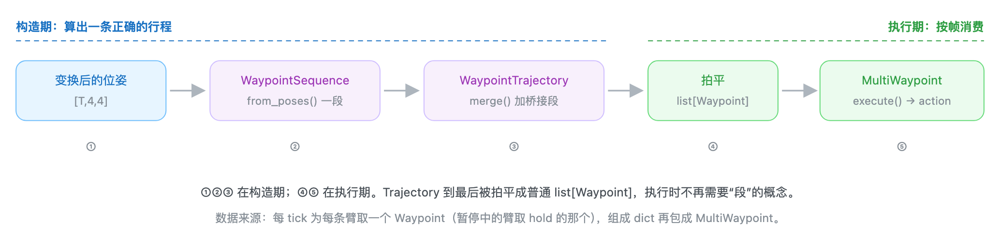
Waypoint 里有什么
Waypoint(
pose=[4,4], # 绝对目标位姿（世界系），[m, rad]
passthrough_action={"franka": [-1]}, # 这一步的非位姿通道（夹爪等）
noise=0.03, # 只打位姿、不打透传
joint_seed=None, # 可选关节种子（IK / 离线调度）
)
# Waypoint 存的是“目标”，action 是“目标 − 当前”。
noise 到底加在哪
Waypoint.noise 是编码 action 时给这一步「6 维位姿动作」叠加的高斯噪声幅度（标准差 σ）， 不是加到目标位姿上的偏移；只在执行那一刻起作用，不改变 Waypoint.pose。
# single_arm_embodiment_adapter：加噪在 clip 之前
if scale > 0.0:
pose_action = pose_action + scale * torch.randn_like(pose_action) # 6 维
if self.clip_pose_action_to_unit:
pose_action = torch.clamp(pose_action, -1.0, 1.0)
- 作用对象是 相对位姿增量 （3 维平移 + 3 维轴角），每维独立 N(0, σ²)。
- noise=0.03 ≈ 每平移轴 ±3 cm、每旋转轴 ±3°（1σ）。
- 只作用于位姿，不作用于透传通道 ——夹爪值逐字复制，永不加噪。
- 加噪在 clip 之前，噪声不会把 action 顶出 [-1,1]。
别和其他“噪声”混淆： coordination_scheme_pos/rot_noise_scale 作用于 物体位姿变换的 delta ，且是 均匀分布 ； 双臂 bimanual_embodiment_adapter 的 _add_noise 给 绝对 pos/quat 每标量加高斯噪声； 文档里的 “startup noise” 指日志噪声，无关。
⑧三大生成算法：同一骨架，三种“桥接”
三个算法共享同一副骨架——拆段、选段、变换到当前场景、执行、保留成功演示——差别只在 段与段之间怎么桥接、以及多臂怎么协调。用 --alg 选择； 任务描述里的 algo 字段独立决定按哪套 algo_params 解析描述，二者要保持一致。
算法 | 臂数 | 桥接方式 | 要点 |
|---|
mimicgen | 1 | 插值 | 单臂 MimicGen 基础款：每段相对参考物体存储，换物体位姿回放就是末端轨迹的刚体变换。 |
dexmimicgen | 2 | 插值 | 把配方扩到双臂：每臂各自声明子任务序列，段按臂独立选/变换/执行；用 sequential / coordination 约束同步特定子任务对。 |
skillgen | 1 | 运动规划 | cuRobo 规划的无碰撞 transit，替代插值；需要子任务起点信号；每个环境一个 planner。 |
MimicGen（单臂，参考实现）
每个子任务段相对其参考物体存储，因此在新物体位姿下回放该段 = 对记录的末端轨迹做刚体变换。 段与段之间，末端从当前位置线性插值到变换后段的起点（num_interpolation_steps，可再固定 hold num_fixed_steps）， 逐步 action_noise 增加多样性。若某步任务成功条件成立即视为成功；只有成功演示才被导出。
该变换要求 task-space action ：机械臂的 action 必须编码末端位姿目标（相对或绝对）——这正是机械臂适配器保证的。
DexMimicGen（双臂）
两套机制保持两臂一致：
- 选源范围 ——默认所有臂复用 同一条源演示 的段（select_src_per_arm: false），保留人类演示里隐含的协调关系。
- 约束 ——描述里的 sequential / coordination 条目在运行期同步特定子任务对。
人形示例用绝对位姿的 absolute_pose_whole_body_bimanual 适配器：每臂一个位姿切片 + 一组手关节索引， action 由每臂目标逐步重组而成。
SkillGen（运动规划 transit）
SkillGen 把每个子任务拆成两阶段：先用 cuRobo 规划一段无碰撞 transit 到技能段起点，再回放变换后的技能段。 相比 MimicGen 的直线插值，它换来三件事——运动质量（可行、平滑的机器人运动）、 碰撞意识（同时避让场景与手中握持物）、适应性（物体摆得离源演示很远、或场景拥挤时仍可用）。 代价是每个环境都需要一个 cuRobo planner，显存与运行成本更高。
因为过渡是 现场规划 而非回放， 一份标注数据集可以驱动多个任务变体 —— 例如“桌面堆叠”和“料箱内堆叠”都由同一份标注好的堆叠数据集生成。
SkillGen 是三者里最“重”的一个，下面 ⑨ SkillGen 深潜 单独展开： 两阶段如何衔接、代码里怎么 stash/resume、标注为何需要 7 个标记、planner 如何解析配置、 运行前 preflight 清单，以及各类规划失败怎么解读。
异步多环境：一个生成器，N 个环境，锁步仿真
只创建一个 DataGenerator，但为每个 env_id 创建一个 asyncio task； 同步侧 env_loop 负责“等齐每个环境各一个 action → 批量 step 一次 → 顺手处理 reset 请求”。 每个环境的尝试逻辑（含失败重试）在各自 task 里独立跑。
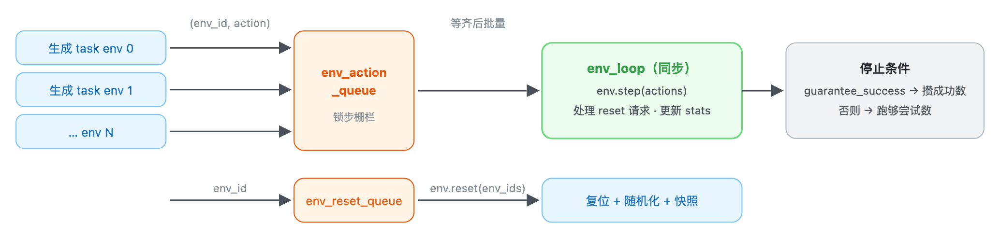
多个 task 共享源池，且 SkillGen 可能在生成中往池里加 episode，因此池带一个 asyncio 锁； 默认静态池不加锁，零开销。加锁范围只覆盖“刷新边界表 + 调算法规划”这一致性窗口。
环境 Profile：不改环境 id，造任务变体
环境 profile 是一个 YAML 叠加层，用 --env_profile 传入，在创建环境前原地叠加到已解析的 env 配置上， 把基础任务变成变体——而不需要注册新的环境 id。
区块 | 作用 |
|---|
scene.rigid_objects.add | 从 USD 生成新刚体（含初始位姿、缩放、物理属性）。 |
scene.rigid_objects.override | 修补基础任务已有刚体的属性（如更硬的接触求解）。 |
events.remove | 按名禁用基础任务的 event term（如去掉默认方块随机化）。 |
events.override | 把新参数合并进已有 event term。 |
events.add | 新增 event term——通常是为新增/重新钉死的物体配置 reset 随机化。 |
planner | 指定为该修改场景调好的运动规划 profile 名（SkillGen 用）。 |
应用顺序为：scene 增 → scene 改 → events（remove → override → add），因此新增的 event 可以引用新增的资产。 校验很严格：base_env 必须等于当前环境 id；add 不允许遮蔽基础任务已有的资产/事件； override / remove 不允许操作不存在的项。
料箱变体示例（franka_bin_stack.yaml）： 把蓝方块钉在桌心、放进一个窄料箱，红/绿方块在箱外随机化； 因为它比纯堆叠更难（间隙窄、更多尝试被拒），成功率更低、耗时更长。注意添加物体的 spawn 位姿会被烘焙进 USD stage ，规划器碰撞世界读的是该位姿而非 reset 事件产生的位姿，所以钉死物体时两边要一致。
⑨SkillGen 深潜：用运动规划替代插值
前面 ⑧ 只给了 SkillGen 的轮廓。这一节把它彻底展开：为什么必须换掉插值、两阶段如何在代码里衔接、 标注与配置差在哪、planner 怎么解析、跑之前要过哪些检查、以及哪些失败是正常的。
9.1 它解决什么问题：插值是“盲”的
MimicGen 用末端位姿直线插值桥接两个子任务——快，但盲目： 插值出来的路径可能扫过障碍物，而且当新的物体摆放离源演示越远，插值路径的质量越差 （甚至机械臂根本够不到、姿态畸变）。SkillGen 于是把每个子任务拆成两个阶段：
阶段 | 做什么 |
|---|
① Transit
（规划） | 用 cuRobo 从机器人当前末端位姿，规划一段无碰撞的运动到该子任务技能段的（变换后的）起点。 手中握持的物体会附着到运动链上一起做碰撞检查。 |
② Skill
（回放） | 人类演示的那一段技能，按 MimicGen 的方式变换后逐步回放，逐步 action_noise 提供多样性。 |
相比 MimicGen 的三点收益
- 运动质量 ——平滑、运动学可行的机器人运动，而非直线姿态插值。
- 碰撞意识 ——规划 transit 同时避让场景与夹爪握持物；插值对二者都无知。
- 适应性 ——过渡每次现场规划，因此物体摆得远、或进入拥挤场景（料箱）也仍能工作。
代价
- 每个环境一个 cuRobo planner（--num_envs 个），显存与启动成本更高。
- 需要 cuRobo 专用镜像（./docker/run_docker.sh -c）并匹配 GPU 算力。
- 标注更麻烦：每段都要“起点 + 终点”，且只能手动标注。
- 规划可能失败，attempt 会被丢弃重建。
9.2 两阶段流水线与一次 attempt 的五步
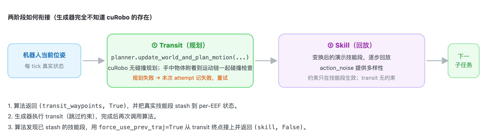
SkillGen 的一次生成尝试随后按这条流水线跑：
步骤 | 内容 |
|---|
1. Reset | 环境复位并随机化方块摆放；快照初始状态供输出 episode 使用。 |
2. 选段与变换 | 为当前子任务选一段源技能（默认按参考物体位姿最近邻），刚体变换到参考物体当前位姿；技能段入口点按描述的偏移范围随机化。 |
3. Plan | planner 把碰撞世界同步到实时场景（若该子任务预期握持物体则附着它），从当前末端位姿规划无碰撞 transit 到技能段起点。规划失败 → 本次 attempt 放弃并计失败。 |
4. Execute | 先执行 transit waypoints，再回放技能段并逐步加噪。 |
5. Record | 每步检查成功条件；成功 attempt 导出为演示。 |
9.3 代码视角：一个钩子、三种返回、stash/resume
SkillGen 是 GenerationAlgorithm 的子类，只覆写 plan_subtask_trajectory()； 差别全部由类属性声明（自注册进 REGISTERED_ALGORITHMS）：
类属性 | SkillGen 的值 / 含义 |
|---|
name | "skillgen" —— 即 --alg 的取值。 |
expected_eef_count | 1 —— 单臂。 |
requires_motion_planner | True —— 构造时要 motion_planners=（每环境一个）。 |
uses_subtask_start_signals | True —— 源演示必须带子任务起点信号，池据此解析边界。 |
supports_coordination | False —— 不支持跨臂协调约束。 |
钩子的返回契约（生成器据此分支）
返回 | 生成器的处理 |
|---|
(waypoints, False) | 当作真实子任务执行，约束生效。 |
(waypoints, True) | 当作 MP transit 执行，期间跳过约束；算法自己把真实子任务 stash 到 per-EEF 状态。 |
None | 规划失败；当前 generate() attempt 以 success=False 中止。 |
新子任务分支（stash 技能段，返回 transit）
# autodata_core/algorithms.py · SkillGen.plan_subtask_trajectory()
subtask_traj = data_generator.generate_eef_subtask_trajectory(...) # 真实技能段
target_pose = subtask_traj[0].pose
# 该子任务手里（预期）握持的物体，供 planner 附着到碰撞模型
expected_attached_object = datastream.get_expected_attached_object(eef_name, subtask_index)
planner = self.motion_planners[env_id]
planning_success = planner.update_world_and_plan_motion(
target_pose=target_pose,
expected_attached_object=expected_attached_object,
env_id=env_id, step_size=..., enable_retiming=...)
if not planning_success:
return None # 整个 attempt 失败
mp_waypoints = self._convert_planned_trajectory_to_waypoints(planner, subtask_traj[0].passthrough_action)
eef_state.pending_subtask_trajectory = subtask_traj # stash
eef_state.is_in_motion_plan = True
return mp_waypoints, True # 这是 transit
Resume 分支（执行完 transit，接上技能段）
if eef_state.pending_subtask_trajectory is not None:
merged = data_generator.merge_eef_subtask_trajectory(
..., subtask_trajectory=eef_state.pending_subtask_trajectory,
force_use_prev_traj=True) # 从 MP 终点位姿接入，而非实时机器人位姿
eef_state.pending_subtask_trajectory = None
eef_state.is_in_motion_plan = False
return merged, False # 这才是真实技能段
为什么父类里也留着这段 resume 逻辑？ ——父类被所有算法复用，SkillGen 只覆写了 plan_subtask_trajectory， 两处分支内容一致，因此 resume 路径在基类与子类里都能命中，stash/resume 的状态机保持一致。
两阶段期间生成器的配套行为
行为 | 细节 |
|---|
约束在 transit 期间跳过 | _apply_constraint_progression_rules() 在 MP transit 期间直接返回 False——transit 不受约束。 |
MP 完成只“重置”不“推进” | MP 段执行完时 _handle_subtask_completion() 只把 step_index=None 触发 resume，不推进子任务。 |
transit 噪声 | _convert_planned_trajectory_to_waypoints() 读 config.motion_noise_scale 给每个 waypoint 加噪（缺省 0.0；Franka preset 为 0.02）。 |
规划轨迹放哪 | 规划结果从 get_planned_poses() 读出转成 Waypoint 执行；待执行技能段暂存 pending_subtask_trajectory。两者都不写回源 DatagenInfo。 |
源 DatagenInfo ──切片、变换──→ 技能片段（stash）
当前机器人状态 ──cuRobo 规划并执行──→ 技能起点 ──执行技能片段──→ 技能结束
9.4 标注：SkillGen 独有的 7 个标记
规划器必须知道每个技能段从哪开始，所以 SkillGen 除终止信号外还需要起点信号。 对四段堆叠任务，一条演示要打 7 个标记，且顺序固定为“起点、终点、起点、终点…以末段起点收尾”：
序 | 标记 | 含义（技能段应覆盖接触丰富的那部分动作） |
|---|
1 | grasp_1 起点 | 夹爪开始朝红块的最终接近 |
2 | grasp_1 终点 | 红块被稳稳抓牢 |
3 | stack_1 起点 | 开始往蓝块上放置 |
4 | stack_1 终点 | 红块落在蓝块上、夹爪松开 |
5 | grasp_2 起点 | 开始朝绿块最终接近 |
6 | grasp_2 终点 | 绿块被稳稳抓牢 |
7 | stack_2 起点 | 开始往红块上放置（末段，随轨迹结束，无需终点） |
一个终止信号与下一个起点信号之间的那部分，就是留给 transit 规划的空隙——所以技能段应只覆盖接触密集的动作 （最终接近、抓取、放置），其余交给规划。标记数量与预期不符时，episode 会直接重放以便重新标注。
两个硬限制： ① SkillGen 只能手动标注 （--viz kit），自动标注只产出终止信号，不足以驱动规划； ② SkillGen 版任务描述的 每个 子任务都要写 subtask_term_signal， 包括最后一个 —— 该名字同时充当该子任务 起点信号的键 ；末段本身仍随轨迹结束，不读取自己的完成信号。
9.5 任务描述与 embodiment 的差异
字段 | SkillGen 版 |
|---|
algo / use_skillgen | skillgen / true |
subtask_term_signal | 每个子任务都要写（含末段 stack_2），兼作起点信号键 |
num_interpolation_steps | 0（transit 取代插值） |
algo_params.subtask_start_offset_range | 可用：随机化技能段从哪进入（负值提前、正值推后）；首段该偏移与 first_subtask_start_offset_range 相加 |
subtask_term_offset_range | 官方两例均为 [0,0]——技能段边界通常不做抖动 |
裁剪自 franka_cube_stack_skillgen.yaml
algo: skillgen
generation_policy:
use_skillgen: true
subtasks:
franka:
- object_ref: cube_2
subtask_term_signal: grasp_1 # 兼作 grasp_1 的起点信号键
subtask_term_offset_range: [0, 0]
action_noise: 0.03
num_interpolation_steps: 0 # transit 取代插值
...
- object_ref: cube_2
subtask_term_signal: stack_2 # 末段也要写（MimicGen 版此处留空）
subtask_term_offset_range: [0, 0]
num_interpolation_steps: 0
embodiment：只差一个 eef_offset
franka_ik_rel_skillgen.yaml 与 MimicGen 版形状相同（同为 delta_pose_ik_single_arm、7 维 action）， 唯一区别是坐标系：SkillGen 的源数据标注在 Franka panda_hand 帧（cuRobo 的规划 link）， 而通用 IK-Rel 任务报告的是指间 end_effector 帧，因此用偏移把报告位姿移回 panda_hand：
eef_offset: [0.0, 0.0, 0.1034] # (环境报告的 EEF 帧) − (源数据标注帧)
这个偏移弄错，规划出来的 transit 与记录的技能段就 对不齐 ，表现为“每次抓取都整体偏移一个固定距离”。 它是排查“变换后动作偏移”类问题的第一站。
9.6 环境 profile：同一份数据，造出“料箱堆叠”变体
没有专门的料箱环境。一个环境 profile（--env_profile 叠加的 YAML）在创建环境时 把普通堆叠任务变成“料箱内堆叠”：蓝方块钉在桌心、放进一个窄料箱，红/绿方块在箱外随机化。 变体与基础任务共用同一份已标注堆叠数据集——这正是前面说的“一份数据驱动多个变体”。
# 裁剪自 autodata_examples/env_profiles/franka_bin_stack.yaml
name: franka_bin_stack
base_env: Isaac-Stack-Cube-Franka-IK-Rel-v0
planner: franka_stack_cube_bin # ← 为该场景调好的 planner profile
scene:
rigid_objects:
add:
blue_sorting_bin:
usd_path: "{ISAACLAB_NUCLEUS_DIR}/Mimic/nut_pour_task/nut_pour_assets/sorting_bin_blue.usd"
position: [0.4, 0.0, 0.0203]
scale: [1.1, 1.6, 3.3]
override:
cube_1: {rigid_props: {solver_position_iteration_count: 40}} # 更硬的接触求解
events:
remove: [randomize_cube_positions]
add:
reset_blue_bin_pose: ... # 钉死料箱
reset_cube_pose: ... # 红/绿方块在箱外随机化
对应的任务描述 franka_bin_stack_skillgen.yaml 与普通堆叠子任务相同， 但把 action_noise 设为 0.0——料箱壁留给扰动技能段的间隙很小。 生成命令只改描述与 --env_profile，--input_file 复用同一数据集：
python scripts/generate_dataset.py \
--env_name Isaac-Stack-Cube-Franka-IK-Rel-v0 \
--alg skillgen \
--task_descriptor autodata_examples/tasks/franka_bin_stack_skillgen.yaml \
--env_profile autodata_examples/env_profiles/franka_bin_stack.yaml \
--embodiment autodata_examples/embodiments/franka_ik_rel_skillgen.yaml \
--input_file ./datasets/annotated_datasets/dataset_franka_skillgen_annotated.hdf5 \
--output_file ./datasets/generated_dataset_skillgen_franka_bin.hdf5 \
--generation_num_trials 10 --num_envs 1 --viz none
预期更差、更慢： 料箱变体比纯堆叠成功率更低、耗时更长——规划问题更难（间隙窄），更多 attempt 被拒。 生成结果 JSON 会记录所用 profile，因为输出数据集本身只保存基础 env id。
9.7 Planner：cuRobo 后端与配置解析
运动规划后端可插拔，官方后端是 cuRobo（GPU 加速的无碰撞轨迹优化），位于 autodata_interfaces/motion_planners/。planner 通过共享的 Datastream 读取所有世界状态 （碰撞几何、物体位姿、机器人关节），从不直接触碰 env / robot 句柄。
接口（MotionPlannerBase）
方法 | 用途 |
|---|
update_world_and_plan_motion(target_pose, ...) | 把碰撞世界同步到当前场景并规划到目标末端位姿（含预期附着物体），返回是否成功。 |
has_next_waypoint() / get_next_waypoint_ee_pose() | 把规划轨迹按末端位姿迭代。 |
get_planned_poses() | 完整规划位姿序列。 |
reset_plan() | 丢弃当前规划。 |
get_planner_info() | 日志用诊断信息。 |
多环境生成时每环境一个 planner（共 --num_envs 个）；generate_dataset.py 在 --alg skillgen 时自动构建（_build_motion_planners），无需额外 CLI 标志。
配置怎么解析：两条路径
入口 | 时机与行为 |
|---|
CuroboPlannerCfg.from_profile(name) | 环境 profile 指定了 planner 字段时用它——把 planner 调参与 env id 解耦，直接按键取注册表里的工厂；未知名字直接断言失败。 |
CuroboPlannerCfg.from_task_name(task) | 否则按任务 id 子串匹配预设：含 stack-cube-bin → 料箱预设；含 stack-cube → 普通堆叠预设；其余回退 Franka 预设并打印警告。 |
PLANNER_PROFILES 目前注册三个：franka、franka_stack_cube、franka_stack_cube_bin。 三者都从 franka_config() 派生（Nucleus 上的 Franka URDF、碰撞球、夹爪开合位置等）， 再按场景覆盖：static_objects（如 ["bin","table"]）、approach_distance / retreat_distance、 collision_activation_distance、gripper_closed_positions、motion_noise_scale 等。
关键配置字段
字段 | 含义 |
|---|
robot_config_file / robot_name | cuRobo 机器人模型（运动学、碰撞球）。 |
ee_link_name | 规划到目标位姿的那个 link。 |
gripper_joint_names + gripper_open/closed_positions | 规划时施加的夹爪状态。 |
attached_object_link_name / hand_link_names | 握持物体附着在运动链的哪里，以及附着物碰撞检查时要忽略哪些 link。 |
world_config_file / static_objects / world_ignore_substrings | 碰撞世界：基础描述、按静态处理的场景物体、要排除的 prim。 |
collision_checker_type | 碰撞表示（默认 mesh）。 |
num_trajopt_seeds / num_graph_seeds / trajopt_tsteps | 规划力度：种子越多越慢，但更能跳出局部极小。 |
interpolation_dt | 返回轨迹的时间步长。 |
collision_activation_distance | 碰撞代价开始生效的缓冲距离。 |
approach_distance | 目标前那段直线接近的长度。 |
motion_noise_scale | transit waypoint 的噪声尺度（Franka preset 0.02）。 |
附着物体（Attached Objects）
当一个子任务的技能段结束时夹爪握着物体，则下一段 transit 必须把该物体当作机器人的一部分。 生成器依据任务描述的参考物体告诉 planner“预期附着哪个物体”；planner 快照它相对附着 link 的位姿， 并在整段规划里对合成体做碰撞检查。物体被放下后，附着解除、物体回到世界模型。
可视化与调试
cuRobo 后端可通过 Rerun 可视化碰撞球场模型与规划轨迹（visualize_spheres / visualize_plan）。 生成时传 --visualize_plan 即可开启，用于诊断规划失败、意外绕行、碰撞世界不一致等问题； 多环境时只可视化 env 0（保持仿真响应），且它独立于 Kit 窗口，故可与 --viz none 同用。 planner 诊断（成功率、耗时）可从 get_planner_info() 获取。
9.8 Preflight：开跑前必须过的检查
在标注演示或开始一次长时间 SkillGen 生成前，先完成 preflight：校验 cuRobo 镜像、GPU 构建、源数据集、 Nucleus 资产下载，以及一次完整的端到端生成。更换 GPU 或重建开发镜像后要重做。
要求 | 需要什么 |
|---|
容器 | cuRobo 开发镜像，用 ./docker/run_docker.sh -c 启动。 |
显存 | 1–2 个环境建议至少 24 GB；约 5 个环境建议 48 GB 显卡。 |
GPU 构建 | cuRobo 内核需按运行生成那块 GPU 的算力编译。 |
网络 | 初始化 planner 时需能出网访问 Nucleus 资产服务器，以获取 Franka URDF。 |
源数据 | Git LFS 已拉取，且 SkillGen 标注的 HDF5 结构有效。 |
显示 | 可选。无头生成用 --viz none；手动标注、Kit 可视化、Rerun 查看器需要显示。 |
# 宿主机：确认 GPU 算力与显存，拉取 LFS，启动 cuRobo 容器
nvidia-smi --query-gpu=name,compute_cap,memory.total --format=csv
git lfs pull
./docker/run_docker.sh -c # 镜像若是为别的 GPU 构建的，用 -c -r 重建
# 容器内：验证 cuRobo 与源数据集
python -c "import curobo, torch; print(curobo.__file__); print(torch.cuda.get_device_name(0))"
python scripts/validate_dataset.py ./datasets/annotated_datasets/dataset_franka_skillgen_annotated.hdf5
# 端到端规划冒烟测试：先生成 1 条成功演示
python scripts/generate_dataset.py \
--env_name Isaac-Stack-Cube-Franka-IK-Rel-v0 --alg skillgen \
--task_descriptor autodata_examples/tasks/franka_cube_stack_skillgen.yaml \
--embodiment autodata_examples/embodiments/franka_ik_rel_skillgen.yaml \
--input_file ./datasets/annotated_datasets/dataset_franka_skillgen_annotated.hdf5 \
--output_file ./datasets/generated_dataset_skillgen_preflight.hdf5 \
--result_file ./datasets/generated_dataset_skillgen_preflight.json \
--generation_num_trials 1 --num_envs 1 --viz none
这次冒烟测试覆盖了 Nucleus URDF 下载、cuRobo 初始化、碰撞世界更新、运动规划、执行与 HDF5 录制。 当它记录下 1 条成功演示、且校验器报告输出为 VALID 时，preflight 通过。
9.9 规划失败怎么读：哪些正常、哪些是配置问题
SkillGen 每次都在新随机化的场景上规划。有些配置在规划器的搜索预算内确实无解， 因此单次规划失败是预期的。两个官方 SkillGen 描述都设 guarantee_success: true： AutoData 记下这次失败、复位场景、继续重试，直到记录到所需数量的成功演示。
观察到的现象 | 预期？ | 应对 |
|---|
偶发某次 attempt 报无碰撞路径，随后生成继续 | 是 | 无需处理，关注整体成功率。 |
料箱堆叠比普通堆叠拒得更多、跑得更久 | 是 | 窄间隙让规划更难，属预期。 |
每次都从同一个子任务开始就规划失败 | 否 | 查该子任务的起点标注、末端坐标系与 eef_offset、planner profile、碰撞世界。 |
planner 初始化/运行时报 CUDA 显存不足 | 否 | 减小 --num_envs；先用单环境验证再扩容。 |
规划开始前 cuRobo 导入 / CUDA 内核 / Nucleus 下载就失败 | 否 | 按 preflight 失败处理，查对应排障章节（先修 setup，再查 planner 配置）。 |
排障顺序建议： 先排除 setup 类问题（cuRobo 导入、CUDA 内核、Nucleus 下载、LFS 未拉取）， 再查标注/坐标系（起点标注、eef_offset、参考物体），最后才调 planner 参数（碰撞世界、种子数、approach 距离）。
⑩随机化专题：真正的“随机”只有几处
一条生成演示的多样性来自两层：场景多样性来自环境 Reset（环境层），轨迹多样性来自生成层。 下面把每个随机源单独讲清，并标注它属于“随机”还是“给定采样后确定”。
10.1 STEP 0：环境 Reset 的随机化（输入 → 重抽 → 落盘）
环境层的随机化不是 AutoData 写的，是基任务（isaaclab_tasks）自带的 Isaac Lab EventManager 事件项；AutoData 只在开跑前用 env profile 做增删改， 然后每个 attempt 的 env.reset() 里重新抽一次。
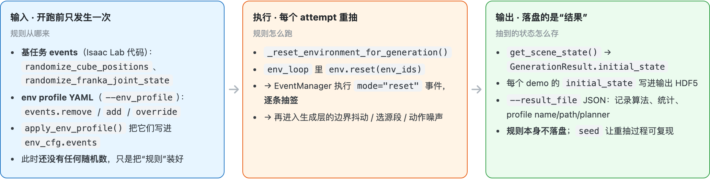
以 franka_bin_stack 为例，overlay 之后真正生效的随机化清单 （“钉死”和“随机”用同一套机制，区别只在区间是否退化）：
event term | mode | 作用对象 | 怎么随 | 类型 |
|---|
randomize_franka_joint_state | reset | 机器人 | 关节角随机（基任务自带，未被动） | 随机 |
reset_blue_bin_pose | reset | bin | x[0.4,0.4] y[0,0] z[0.0203,0.0203] yaw[0,0] | 钉死 |
reset_cube_1_pose | reset | cube_1 | x[0.4,0.4] y[0,0] z[0.0203,0.0203] yaw[0,0] | 钉死 |
reset_cube_pose | reset | cube_2, cube_3 | x[0.65,0.70] y[-0.18,0.18] yaw[-1,1]，z 固定，min_separation 0.1 | 随机 |
randomize_cube_positions | — | — | 被 events.remove 设为 None，不生效 | 已移除 |
同一个 profile，两次 attempt 抽到的东西不同（数值为示意）：
对象 | 类型 | attempt #1（抽到的） | attempt #2（重抽） | 变化 |
|---|
机器人关节角 | 随机 | [-0.02, -0.28, 0.05, -2.10, 0.01, 2.03, 0.55] | [ 0.03, -0.51, -0.12, -2.35, 0.07, 2.41, 0.68] | 🎲 变 |
bin | 钉死 | (0.40, 0.00, 0.0203) | (0.40, 0.00, 0.0203) | 🔒 同 |
cube_1 | 钉死 | (0.40, 0.00, 0.0203) | (0.40, 0.00, 0.0203) | 🔒 同 |
cube_2 | 随机 | (0.67, 0.11, 0.0203) yaw 0.4 | (0.70, -0.05, 0.0203) yaw -0.9 | 🎲 变 |
cube_3 | 随机 | (0.66, -0.13, 0.0203) yaw -0.7 | (0.65, 0.16, 0.0203) yaw 0.6 | 🎲 变 |
一句话： 规则是 输入 （基任务 events + profile delta，在代码和 YAML 里）；随机化在每个 attempt 的 env.reset() 里按规则 重抽一次 ；AutoData 只保存 抽到的状态 （每个 demo 的 initial_state） 和 复现元信息 （result_file + seed）。profile 不是 AutoData 固化的随机化配置。
10.2 子任务边界抖动（randomize_subtask_boundaries）
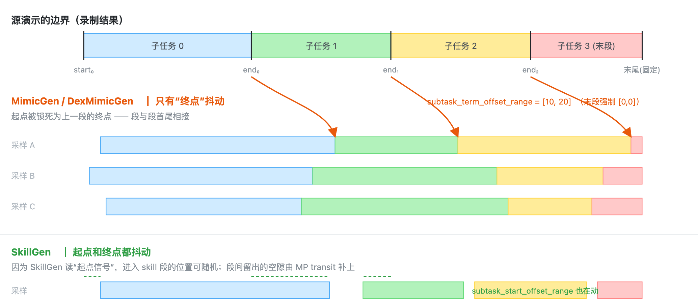
加载数据集时，DataGenInfoPool 会用最坏情况（所有偏移取极值）预演一遍，断言“子任务非空且不重叠”， 标注错的源数据会立刻报错并给出具名原因。
10.3 源演示段选择（selection_strategy）
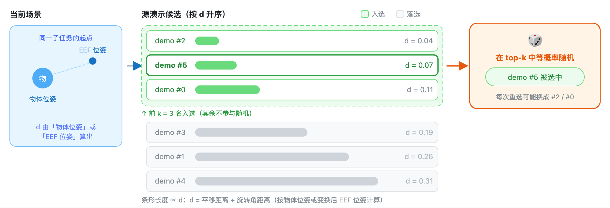
d 在算哪两者的距离
当前场景只有一个锚点，候选段有 N 条，所以 d 是「一个当前位姿」对「N 个候选段起点位姿」的 一对多比较结果（dists 是长度 N 的向量）。这里的“起点”不是标注时的原始起点，而是 边界抖动之后该子任务切片的第 0 帧（见 9.2）——因此同一条源演示在不同 attempt 里算出的 d 也会变。
策略 | 左端：当前场景 | 右端：候选段起点 | 是否先做坐标变换 |
|---|
nearest_neighbor_object | 当前物体位姿 | 源演示该子任务第 0 帧的物体位姿 | 否。两端都是物体位姿，直接比 |
nearest_neighbor_robot_distance | 当前 EEF 位姿 | 源演示第 0 帧的 EEF 位姿，先经 T_obj_cur · inv(T_obj_src) · T_eef_src 搬到“当前物体系” | 是。传入的 object_pose 在这里是变换算子，不是比较对象 |
位姿统一是 4×4 齐次变换 [R | p]：R 是 3×3 旋转矩阵，p 是位置向量[m]。 EEF 位姿是末端执行器（夹爪）那一点的位姿；物体位姿是 subtask.object_ref 所指物体的位姿。两者都在同一坐标系下比较。
d 怎么算、为什么只用来排序
d_i = pos_weight · pos_dists + rot_weight · rot_dists
pos_dists = ‖p_i − p_cur‖ # 位置距离（L2 范数）[m]
rot_dists = acos((tr(R_i · R_curᵀ) − 1) / 2) # 旋转角距离 [rad]，0~π
两项量纲不同（m vs rad），所以用 pos_weight / rot_weight 调“位置更重要还是姿态更重要”。 因此 d 的数值本身没有物理含义，只在同一批候选之间做比较才有意义；代码里也从不判断 d < 某阈值，永远只是升序排一遍、取前 nn_k 条。
真正的目的：让紧接着的变换改动最小。 选完源段，源片段会按 T_obj_cur · inv(T_obj_src) · T_src_eef 整体刚体变换到当前物体位姿下再回放（阶段 3b）。 起点位姿越接近当前场景 → 需要的变换越小 → 重放出来的手部动作越可能仍然“够得着、抓得住”。 因为没法对每条候选都真跑一遍仿真去验证，就用起点位姿差这个 廉价代理 来排序。所以“近”是手段，不是目的。
三点注意：① d 只看源片段的第 0 帧，不评估整段动作质量——起点很像但后面很糙的两段它区分不了； ② 取 top-k 之后还要等概率随机（nn_k = min(nn_k, 可用源演示数)，nn_k: 1 才是“总选最近那条”）， 用一点可靠性换多样性，避免输出塌缩到同一条源演示； ③ object_ref 为空时只允许 random，双臂 coordination 下另一臂已选过则直接沿用同一条， 这两种情况根本不算距离。
10.4 动作噪声（action_noise）
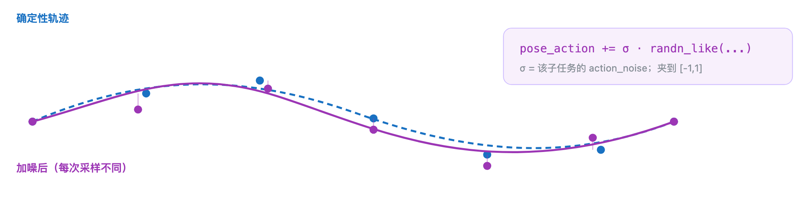
apply_noise_during_interpolation 决定桥接插值阶段是否也加噪。被回放的源片段永远加噪， 插值 / hold 段是否加噪由该开关决定。单臂与双臂适配器都只作用于 pose 部分，夹爪等 passthrough 通道不加噪。 噪声值来源：源片段子任务 action_noise；插值段 apply_noise_during_interpolation × action_noise（默认 false → 0）； SkillGen 的 MP transit 用 motion_planner.config.motion_noise_scale（缺省 0）。
10.5 协调噪声（仅双臂）
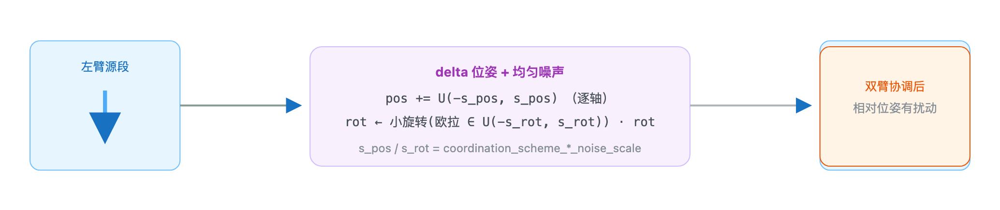
10.6 一图看清：所有随机化参数在哪配置
参数 | 位置 | 类型 | 含义 |
|---|
first_subtask_start_offset_range | Subtask | 边界抖动 | 第一个子任务起点的偏移范围 |
subtask_term_offset_range | Subtask | 边界抖动 | 每个子任务终点边界的偏移范围（末段必须 [0,0]） |
algo_params.subtask_start_offset_range | SkillGen 专有 | 边界抖动 | SkillGen 子任务起点的偏移范围（仅当算法读起点信号时生效） |
selection_strategy + selection_strategy_kwargs.nn_k | Subtask | 源段选择 | random / 最近邻物体 / 最近邻 EEF；top-k 内再随机 |
select_src_per_subtask / select_src_per_arm | generation_policy | 源段选择 | 重选粒度（每段重选 / 每条臂各自选） |
action_noise | Subtask | 动作噪声 | 该子任务每步 pose 动作的高斯噪声幅度 |
apply_noise_during_interpolation | Subtask | 动作噪声 | 插值桥接阶段是否也加噪 |
coordination_scheme_pos/rot_noise_scale | SubtaskConstraint | 协调噪声 | 双臂协调 delta 位姿的均匀噪声尺度 |
seed | generation_policy | 复现 | 统一给 random / numpy / torch 播种 |
num_interpolation_steps / num_fixed_steps | Subtask | 确定 | 桥接段长度（改变时序，但不含随机） |
transform_first_robot_pose / interpolate_from_last_target_pose | generation_policy | 确定 | 插值锚点选择（影响拼接口感，不含随机） |
一句话： 场景多样性来自 Reset（环境层），轨迹多样性来自生成层—— 边界抖动 改变“时间段”， 源段选择 改变“用哪段”， 动作噪声 改变“怎么执行”。三者叠加，就得到大量彼此不同的演示。
⑪数据集结构：HDF5 里到底存了什么
从原始采集 → 标注 → 生成，数据始终装在 Isaac Lab HDF5 数据集里。三者结构相同， 标注只是在 episode 内多写了一份 obs/datagen_info。
每条 episode 的必备内容
键 | 含义 |
|---|
actions | 逐步记录的 action 序列，形状 [T, D]。Franka 单臂为 7 维（delta pose 6 + 夹爪 1）。 |
initial_state | episode 开始时的场景快照——回放时先把场景复位到这个状态，再逐步执行 actions。 |
obs | 观测组：包含策略观测，以及（标注后）obs/datagen_info 下的逐帧位姿/信号记录。 |
校验器正好检查这三项是否存在，见 ⑫。episode 名、数量、长度与成功比例以真实文件为准。
标注写入的 obs/datagen_info
字段 | 形状（每条演示） | 含义 |
|---|
eef_pose | {eef_name: [T,4,4]} | 逐步记录的 EEF 实际位姿。 |
target_eef_pose | {eef_name: [T,4,4]} | 由记录 action 反解出的控制器目标位姿（变换用）。 |
object_poses | {object_name: [T,4,4]} | 记录到的物体位姿，作为子任务的参考系。
HDF5 键为 object_pose（单数），入池后属性为 object_poses（复数） |
subtask_term_signals | {subtask_name: [T]} | 逐步布尔完成标志。 |
subtask_start_signals | {subtask_name: [T]} | 逐步布尔起点标志，仅 SkillGen。 |
passthrough_action | {channel: [T,D]} | 非位姿通道（夹爪、手关节、底盘），回放逐字复制。 |
池里的形态与边界表
源池（DataGenInfoPool）把每个 episode 变成上述逐帧记录，并额外为每条 episode 存 子任务边界：按 EEF 给出每个子任务的 (start, end) 下标对。 边界由信号导出——终止信号的上升沿结束其子任务（最后一段随轨迹结束）；启用起点信号时（SkillGen）， 每个子任务的起点改由其自己的起点信号沿决定，而非上一段的终点。
# 边界解析要点（pool.py）
非 SkillGen：start_index = prev_end # 首尾相接
SkillGen ：start_index = 起点信号上升沿 # 技能段间可留空隙，由 MP 补上
终点 ：终止信号上升沿 + 2；末段用整条轨迹长度
解析后 ：_validate_subtask_offsets() 用最坏情况偏移量静态校验，保证随机化后子任务仍非空、不重叠
命名与顺序完全来自任务配置
代码依次处理描述里的子任务项，并按配置中的信号名读取示范标注。DatagenInfo 里的信号 只标记时间点；代码不会观察轨迹后自行判断“这段是抓取”。最后一段没有完成信号，因为它直接延续到整条示范末尾。 SkillGen 的任务配置需为每一段提供信号名，最后一项还需写 subtask_term_signal，用作开始信号的键。
⑫STEP 4 · 验证与回放
结构校验
python scripts/validate_dataset.py ./datasets/generated_dataset_mimicgen_franka.hdf5
校验器为每个文件打印一行摘要——episode 数量、文件元数据里记录的环境 id、仿真参数—— 随后打印逐文件的问题列表。每条 episode 都会被检查必备字段（actions、initial_state、obs）。 它同时适用于原始、标注、生成的任意数据集。
可视回放
python submodules/IsaacLab-Arena/submodules/IsaacLab/scripts/tools/replay_demos.py \
--task Isaac-Stack-Cube-Franka-IK-Rel-v0 \
--viz kit \
--num_envs 20 \
--dataset_file ./datasets/generated_dataset_mimicgen_franka.hdf5
每条 episode 先把场景复位到它记录的 initial_state，再逐步执行记录的 actions—— 应当看到每次物体摆放都不同。好的生成演示看起来像一条可信的人类演示（干净、稳固的抓取与放置）。
回放/质量观察清单
现象 | 可能原因与调整 |
|---|
子任务边界处动作抖动 / 突兀 | 插值太短——调大 num_interpolation_steps。 |
抓取“勉强成功” | 收紧 subtask_term_offset_range，或调小 action_noise。 |
变换后抓取整体固定偏移 | eef_offset 与环境/源数据坐标系不一致（见 ⑬）。 |
大动作执行缓慢或够不到、快速动作回放被截断 | 6 维 pose action 撞到 [-1,1] 截断（clip_pose_action_to_unit）。 |
注意：Isaac Lab 的 PhysX 不是确定性的。 回放时从保存的 initial_state 重放记录 action， 可能与原始生成过程发生偏离，因此 少数 episode 回放时可能不再成功——但数据集里 每一条 在生成时都确实满足过成功条件。 结构校验通过 ≠ 物理回放必然成功。
⑬参数速查 · 常见坑 · 文件索引
任务描述 YAML：Subtask 字段
字段 | 默认 | 含义 |
|---|
<eef_name> | 必填 | EEF 名，必须与机械臂描述一致。MimicGen/SkillGen 期望 1 个；DexMimicGen 期望 ≥2 个。声明顺序 = 执行顺序 = 约束里的下标。 |
object_ref | "" | 定义该子任务参考系的物体名，须匹配 Datastream 的物体位姿键。 |
subtask_term_signal | "" | 子任务终止信号名；除末段外必填（SkillGen 每段都要）。 |
subtask_start_signal | "" | 子任务起点信号名，仅 SkillGen。 |
first_subtask_start_offset_range | [0,0] | 某 EEF 第一个子任务起点的偏移范围。 |
subtask_term_offset_range | [0,0] | 终止边界偏移；负值提前、正值推后。末段必须 [0,0]。 |
selection_strategy | random | 选源策略；random 是 object_ref 为空时唯一允许的值。 |
selection_strategy_kwargs | {} | 直接传给策略；未知/不支持的值会在生成期失败。
支持 pos_weight（默认 1.0）、rot_weight（默认 1.0）、nn_k（默认 3）。 |
action_noise | 0.0 | pose-action 独立高斯噪声的尺度。 |
num_interpolation_steps | 0 | 从当前起始位姿到变换后段首位姿的桥接步数。 |
num_fixed_steps | 0 | 回放前额外保持段首目标位姿的步数。 |
apply_noise_during_interpolation | false | 噪声是否也用于插值/固定保持步；被回放的源片段无论如何都加噪。 |
algo_params | {} | 算法专有字段；MimicGen/DexMimicGen 不接受额外字段，SkillGen 支持 subtask_start_offset_range。 |
任务描述 YAML：generation_policy
字段 | 默认 | 含义 |
|---|
seed | 1 | 生成开始前给 Python random、NumPy、PyTorch 播种。 |
num_trials | 10 | 生成目标；guarantee_success 为真时计成功数，否则计总尝试数。--generation_num_trials 覆盖它。 |
guarantee_success | true | 为真则一直尝试到攒够 num_trials 个成功；为假则跑够 num_trials 次尝试即停。 |
keep_failed | false | 失败尝试是否导出到单独的 HDF5；成功演示始终写入主输出文件。 |
use_skillgen | false | 标注是否需采集 SkillGen 起点信号；生成时会被 --alg 覆盖。 |
select_src_per_subtask | false | 每个子任务是否可重选源演示；为假则该 EEF 全程复用首次选择。 |
select_src_per_arm | false | 每条臂是否独立选源；为假则首次选择被所有臂共享并缓存整轮。 |
transform_first_robot_pose | false | 是否为每个子任务的目标序列前拼源 EEF 位姿（为假时只对首个）。 |
interpolate_from_last_target_pose | true | 非首段的插值桥接是否从上一段最后目标位姿出发；为假则从实时 EEF 位姿出发。SkillGen 总是从 MP 终点接入。 |
约束（多 EEF，DexMimicGen）
字段 | 默认 | 含义 |
|---|
constraint_type | 必填 | sequential 或 coordination（大小写不敏感）。 |
eef_subtask_constraint_tuple | 必填 | 恰好两个 [eef_name, subtask_index]；顺序对 sequential 有意义。 |
sequential_min_time_diff | -1 | -1：前者完成前后者不启动；正值：后者执行到只剩这些步时停下等。 |
coordination_scheme | replay | replay（单位变换）/ transform（完整刚体）/ translate（仅平移）。 |
coordination_scheme_pos/rot_noise_scale | 0.0 | 共享变换上的均匀噪声半宽（m / rad）。 |
coordination_synchronize_start | false | 为真则子任务保持首位姿直到配对 EEF 抵达其协调子任务。 |
机械臂描述 YAML
类型 / 字段 | 要点 |
|---|
delta_pose_ik_single_arm | 单臂相对位姿 IK。action = [delta_pos(3), delta_rot(3), gripper]。字段：eef_name、pose_obs_keys.pos/quat、action_layout.gripper_dim、clip_pose_action_to_unit、eef_offset。 |
absolute_pose_whole_body_bimanual | 人形绝对位姿全身 IK。action = [left_pos, left_quat, right_pos, right_quat, hand_joints, ...]。字段：eefs.<arm>.pose_obs_keys、gripper_action_indices、action_layout.*_pose_slice / hand_joints_slice / canonicalize_quat / passthrough_channels。 |
eef_offset | 从机器人运动学控制 link 到位姿观测所报坐标系的平移 [m]；两帧不一致时抓取会整体偏移。 |
常见坑
症状 | 根因 | 处理 |
|---|
每次抓取都整体偏移一个固定距离 | eef_offset 与环境 EEF 观测帧 / 源数据标注帧不一致 | 量出两帧差并据此设置 eef_offset；SkillGen 版设为 [0,0,0.1034]（指尖↔panda_hand） |
资产/动作翻转约 180°，或旋转乱漂 | 四元数顺序写反（w,x,y,z ↔ x,y,z,w） | 全框架统一 (x,y,z,w)，单位元 [0,0,0,1]；检查观测项与手写位姿 |
首次读位姿就 KeyError | pose_obs_keys / obs_group 与环境观测项不匹配 | 列出环境观测项，照抄键名与组名 |
手指不动，或（双臂）动错手 | gripper_action_indices 在双臂间错配，或按整条 action 索引（应相对 hand-joints 块） | 索引是 hand_joints_slice 内 0 基；对照环境 URDF 关节顺序 |
直接构造 Waypoint(noise=None) 执行报 TypeError | noise 默认 None，而单臂适配器写的是 if scale > 0.0 | 手工构造时显式给 0.0；正常路径都会置浮点值 |
以为“每个子任务都重选源” | select_src_per_subtask: true 与 select_src_per_arm: false 同时存在 | 当前实现是整轮只选一次；不要只按参数名字面理解 |
添加物体后规划器与物理不一致 | 添加物体的 spawn 位姿烘焙进 USD stage，规划器碰撞世界读它而非 reset 事件结果 | 钉死物体时让其 spawn 位姿与 reset 事件一致 |
涉及文件速查
主题 | 文件 |
|---|
主编排器 / 生成循环 | autodata_core/data_generator.py |
算法注册表 / MimicGen / DexMimicGen / SkillGen | autodata_core/algorithms.py |
源片段池 / 边界解析 | autodata_core/pool.py |
Waypoint / 轨迹 / 执行 | autodata_core/waypoint.py |
源数据 schema | autodata_core/datagen_info.py |
位姿变换 | autodata_core/transforms.py |
源演示选择策略 | autodata_core/selection_strategy.py |
Datastream 读接口 / action 编解码 | autodata_interfaces/datastream/datastream.py |
env 配置与锁步循环 | autodata_interfaces/env/isaaclab_env_interface.py |
action 编解码适配器 | autodata_interfaces/embodiments/single_arm_embodiment_adapter.py
bimanual_embodiment_adapter.py |
约束定义 | autodata_interfaces/tasks/subtask_constraint_spec.py |
生成策略 / 子任务规格 | autodata_interfaces/tasks/generation_policy_spec.py · subtask_spec.py |
运动规划后端 | autodata_interfaces/motion_planners/（cuRobo） |
CLI 入口 | scripts/generate_dataset.py · annotate_demos.py · validate_dataset.py |
结果文件 | autodata_utils/generation_result.py |
示例配置 | autodata_examples/{tasks,embodiments,env_profiles}/ |
四份文档的合并关系
来源 | 并入本文的位置 |
|---|
docs/（概念 + 三条 workflow + quickstart + advanced） | 全文骨架：①③④⑤⑥⑦⑧⑨⑪⑫⑬ |
docs/pages/workflows/skillgen/（index + preflight）+ advanced/motion_planners | ⑨ SkillGen 深潜（两阶段、标注、planner、preflight、失败模式） |
AutoData-原理与数据流总览.md | ⑥ 生成生命周期、⑦ Waypoint 层、⑩ 随机化细节、⑬ 文件索引 |
AutoData-数据生成随机化可视化.html | ⑩ 随机化专题（STEP0 因果链、边界抖动、源段选择、动作噪声、协调噪声、参数总表） |
仓库 README.md | ① 全流程概览、总体定位与四大构件 |
内容整理自 AutoData 官方文档与仓库代码；正文数值为示意值，字段与参数以仓库当前代码为准。
运行脚本需在 ./docker/run_docker.sh 启动的开发容器内执行（SkillGen 需 -c 以包含 cuRobo）。